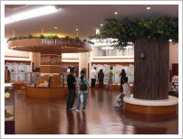
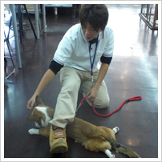
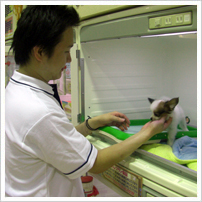

(株)ひごペットフレンドリークラウンパーク
伊丹店


売り場面積500坪以上！！！
西日本最大級の広さを誇る店内で、常時100頭近くのワンちゃん、ネコちゃんが、迎えてくれます。
アクア、小動物コーナーも、最大級の広さと
店内に滝や川が流れる癒し空間を充実させています。
爬虫類館・猛禽類・おさるさんなどなど
珍しい動物たちもたくさん♪
まさにペットショップの概念を超えた
テーマパークショップとお客様から大好評です！
是非、一度皆さんで遊びがてらに来てください。
- ■所在地
- 〒664-0026
伊丹市寺本6丁目69-1
クラウンパーク伊丹内 - ■店長
- 荒木 広平
- ■TEL
- 072-777-3058
- ■営業時間
- 10:00～21:00
- ■WEBサイト
- http://www.higopet.com/shop/s_itami.php
- ■アクセス
方法 - http://www.higopet.com/shopmap/map_itami.php
《交通機関をご利用の場合》
■阪神｢尼崎駅｣より
西口改札を出て右に直進。国道2号線に出て、三井住友銀行前の阪神バス「阪神尼崎駅北停留所」より、宝塚方面「宝塚」行きに乗車。
｢池尻南口｣下車。バスの進行方向（北）に向かって徒歩5分
進行方向右側、道路を渡るとクラウンパークがあります。
■ＪＲ宝塚線｢伊丹駅｣より
伊丹市営バス｢①荒牧バラ公園行き｣もしくは｢⑦鴻池東行き｣に乗車
｢池尻南口｣下車。バスの進行方向（北）に向かって徒歩5分
進行方向右側、道路を渡るとクラウンパークがあります。
■阪急伊丹線｢伊丹駅｣より
伊丹市営バス｢①荒牧バラ公園行き｣もしくは｢⑦鴻池東行き｣に乗車
｢池尻南口｣下車。バスの進行方向（北）に向かって徒歩5分
進行方向右側、道路を渡るとクラウンパークがあります。
《お車をご利用の場合》
国道171号線にて｢昆陽里｣の交差点を北上。
約７００ｍ走行後、右折で道路を渡るとクラウンパークがあります。
（共有駐車場１２７台有）
- ■備考
-
携帯会員ご入会で、毎月15日の「ひごの日」は、全品５％ＯＦＦ（一部対象外あり）
入会アドレスに携帯から空メールを送るだけで手続きできます！
その他、お得なポイントサービスもございます。
卒業生：吉田さん
(株)ひごペットフレンドリー
京都店

京都最大級の総合ペットショップ！約400坪の売場面積！共有駐車場245台完備。
当店は、【緑】をテーマとした内装でお客様のやすらぎの場を求めて頂けるようなお店作りをしております。1階こいぬこねこコーナーには、様々な犬種が、多数おり元気でやんちゃな動物たちがお客様をお出迎えいたします。又、2階フロアには、小動物コーナーからアクアコーナーと京都最大級の売り場面積を誇り、ペンギンから蛇・サソリなどの爬虫類まで扱ってます。もちろん、小動物、ウサギやハムスター、フェレットも種類は豊富。
アクアコーナーでは、日本最大級の金魚鉢が！！小型魚のネオンテトラから大型魚のアロワナまで、まさに多種多彩の魚が揃い、面白く、アクアが大好きな方もきっとご満足いただけます。是ぜひご来店おまちしております。
- ■所在地
- 〒612-8393
京都市伏見区下鳥羽渡瀬町140番地 - ■担当
- 子犬子猫コーナー
- ■TEL
- 075-612-0646
- ■FAX
- 075-612-0647
- ■営業時間
- 10:00～21:00
- ■WEBサイト
- http://www.higopet.com/shop/s_kyoto.php
卒業生：木曽さん
(株)ひごペットフレンドリー
瓜破店

ひごペットフレンドリー瓜破店は、昭和６１年開店の
日本で初めての総合ペットショップです。
知識豊富なスタッフが数多くの生き物や商品を取り扱っております。
お客様に気持ちのこもった接客をして、次もまた来たいと思っていただけるようなお店作りを常に目指し続けています。
私達ひごペットフレンドリーのスタッフがお客様に出来る事の１つは、『お客様と生き物との架け橋になる事』だと思っています。
お客様に満足していただけるような出会いを演出するために私達は努力を惜しみません。
お客様と生き物達から『ありがとう』の言葉をいただくため、ひごペットフレンドリースタッフは日々成長をし続けます。
- ■所在地
- 〒547-0024
大阪市平野区瓜破1-10-14 - ■店長
- 永野 大樹
- ■TEL
- 06-6703-8660
- ■アクセス
-
■電車〓大阪市営地下鉄谷町線 「喜連瓜破駅」より〓②番出口出て瓜破交差 点方面に歩き、瓜破交差点を左（松原方面）に曲がり徒歩１０分。
■バス〓 大阪市営バス「瓜破中学校前」下車、徒歩7分
《お車をご利用の場合》
■大阪市内よりお越しの場合〓国道３０９号線（内環状線）南下、瓜破交差 点を超え３つ目の信号（瓜破４東交差点）右側にあります。
瓜破４東交差点 は右折禁止の為、側道１つ先信号をＵターン願います。
■松原方面よりお越 しの場合〓国道３０９号線（内環状線）北上、瓜破大橋を渡ってすぐ左側にあります。 - ■WEBサイト
- http://www.higopet.com/
- ■備考
- 携帯会員募集中！
ポイントカード会員同時募集！
卒業生：河東さん